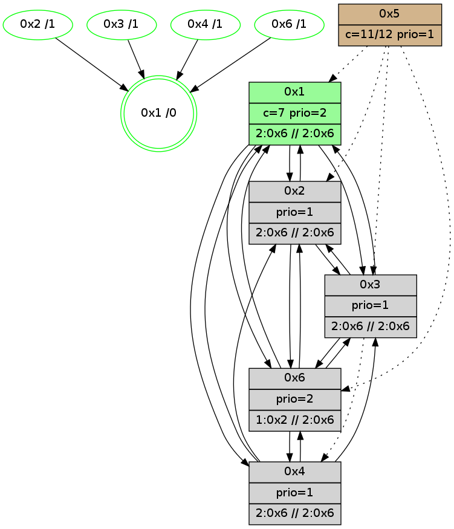

>> << IDX [start] -100 -25 -5 +0 +5 +25 +100 [955.331624031]
 Previous packets
----------------------------------------------------------------------
950.410544 beacon01(adaf) #0 coord=01,02,05,03,04,06 cycle=432.0ms assoc
-- color-indic=1 64 ec a7
950.420505 beacon02(adaf) #0 coord=01,02,05,03,04,06 cycle=432.0ms assoc 64 bd 58
950.430505 beacon05(adaf) #0 coord=01,02,05,03,04,06 cycle=432.0ms assoc 64 1b 72
950.440507 beacon03(adaf) #0 coord=01,02,05,03,04,06 cycle=432.0ms assoc 64 87 56
950.450506 beacon04(adaf) #0 coord=01,02,05,03,04,06 cycle=432.0ms assoc 64 21 7c
950.460507 beacon06(adaf) #0 coord=01,02,05,03,04,06 cycle=432.0ms assoc 64 55 60
950.472266 [Hello(4): seq=756 sym=2,1,6,3 sysInfo=hasWarning stat=2:8,12,3,0/1:2,1,9,0/6:3,9,1,0/3:0,1,0,0]
950.474921 [Hello(6): seq=669 sym=4,2,1,3 sysInfo=hasWarning stat=4:1,4,1,0/2:13,13,10,1/1:1,7,8,1/3:2,10,1,4]
950.476849 [Color(2) seq=143 @0:0 prio=1 >2.@6,1.@3,1.@4 c=7;1,4,6,8,9,b]
950.479786 [Color(6) seq=141 @0:0 prio=2 >1.@2,1.@3,1.@4 >>2.@6,1.@2,1.@3 c=7;1,4,6,8,9,b]
950.485619 [Color(1) seq=182 @0:0 color=7 prio=2 >2.@6 >>2.@6,1.@3,1.@4 c=1,4,6,8,9,b;0,2,3,5,a]
----------------------------------------------------------------------
950.902653 beacon01(adaf) #0 coord=01,02,05,03,04,06 cycle=432.0ms assoc
-- color-indic=1 64 b2 c6
950.912613 beacon02(adaf) #0 coord=01,02,05,03,04,06 cycle=432.0ms assoc 64 e3 39
950.922614 beacon05(adaf) #0 coord=01,02,05,03,04,06 cycle=432.0ms assoc 64 45 13
950.932616 beacon03(adaf) #0 coord=01,02,05,03,04,06 cycle=432.0ms assoc 64 d9 37
950.942614 beacon04(adaf) #0 coord=01,02,05,03,04,06 cycle=432.0ms assoc 64 7f 1d
950.952615 beacon06(adaf) #0 coord=01,02,05,03,04,06 cycle=432.0ms assoc 64 0b 01
950.964377 [Hello(2): seq=1245 sym=3,6,1,4 sysInfo=hasWarning stat=3:9,5,4,1/6:11,12,3,0/1:4,9,2,0/4:7,11,3,1]
950.967904 [Hello(1): seq=656 sym=2,6,3 sysInfo=hasWarning,coloring-mode-on,ColoringModeRequestCalled stat=2:3,8,13,2/6:1,3,1,0/3:3,1,3,1]
950.970503 [Color(4) seq=111 @0:0 prio=1 >2.@6,1.@3 >>2.@6,1.@2,1.@3 c=7;1,4,6,8,9,b]
950.974319 [Color(3) seq=113 @0:0 prio=1 >2.@6,1.@2,1.@4 >>2.@6,1.@2,1.@3 c=7;1,4,6,8,9,b]
----------------------------------------------------------------------
951.394760 beacon01(adaf) #0 coord=01,02,05,03,04,06 cycle=432.0ms assoc
-- color-indic=1 64 76 a9
951.404723 beacon02(adaf) #0 coord=01,02,05,03,04,06 cycle=432.0ms assoc 64 27 56
951.414721 beacon05(adaf) #0 coord=01,02,05,03,04,06 cycle=432.0ms assoc 64 81 7c
951.424721 beacon03(adaf) #0 coord=01,02,05,03,04,06 cycle=432.0ms assoc 64 1d 58
951.434721 beacon04(adaf) #0 coord=01,02,05,03,04,06 cycle=432.0ms assoc 64 bb 72
951.444721 beacon06(adaf) #0 coord=01,02,05,03,04,06 cycle=432.0ms assoc 64 cf 6e
951.456464 [Hello(4): seq=757 sym=2,1,6,3 sysInfo=hasWarning stat=2:8,13,3,0/1:2,2,9,0/6:4,10,1,0/3:0,2,0,0]
951.459153 [Hello(6): seq=670 sym=4,2,1,3 sysInfo=hasWarning stat=4:1,5,1,0/2:14,13,10,1/1:2,8,8,1/3:3,11,1,4]
951.461011 [Color(2) seq=144 @0:0 prio=1 >2.@6,1.@3,1.@4 >>2.@6,1.@2,1.@3 c=7;1,4,6,8,9,b]
951.464019 [Color(6) seq=142 @0:0 prio=2 >1.@2,1.@3,1.@4 >>2.@6,1.@2,1.@3 c=7;1,4,6,8,9,b]
951.468317 [STC(1) #0.127 new-neigh,tree-change,inconsistent-stability,stable,to-color d=0]
951.471570 [Color(1) seq=183 @0:0 color=7 prio=2 >2.@6 >>2.@6,1.@2,1.@3 c=1,4,6,8,9,b;0,2,3,5,a]
----------------------------------------------------------------------
951.886868 beacon01(adaf) #0 coord=01,02,05,03,04,06 cycle=432.0ms assoc
-- color-indic=1 64 3a 19
951.896829 beacon02(adaf) #0 coord=01,02,05,03,04,06 cycle=432.0ms assoc 64 6b e6
951.906829 beacon05(adaf) #0 coord=01,02,05,03,04,06 cycle=432.0ms assoc 64 cd cc
951.916830 beacon03(adaf) #0 coord=01,02,05,03,04,06 cycle=432.0ms assoc 64 51 e8
951.926831 beacon04(adaf) #0 coord=01,02,05,03,04,06 cycle=432.0ms assoc 64 f7 c2
951.936830 beacon06(adaf) #0 coord=01,02,05,03,04,06 cycle=432.0ms assoc 64 83 de
951.948423 [STC(6)->1 #0.127 new-neigh,tree-change,inconsistent-stability,stable,to-color d=1]
951.949921 [Hello(1): seq=657 sym=2,4,6,3 sysInfo=hasWarning,coloring-mode-on,ColoringModeRequestCalled stat=2:3,8,13,2/4:0,0,0,0/6:1,3,1,0/3:3,2,3,1]
951.952500 [Hello(2): seq=1246 sym=3,6,1,4 sysInfo=hasWarning stat=3:9,6,4,1/6:11,13,3,0/1:5,10,3,0/4:7,12,3,1]
951.955896 [STC(4)->1 #0.127 new-neigh,tree-change,inconsistent-stability,stable,to-color d=1]
951.958505 [Color(4) seq=112 @0:0 prio=1 >2.@6,1.@3 >>2.@6,1.@2,1.@3 c=7;1,4,6,8,9,b]
951.965811 [STC(2)->1 #0.127 new-neigh,tree-change,inconsistent-stability,stable,to-color d=1]
----------------------------------------------------------------------
952.378976 beacon01(adaf) #0 coord=01,02,05,03,04,06 cycle=432.0ms assoc
-- color-indic=1 64 fe 76
952.388937 beacon02(adaf) #0 coord=01,02,05,03,04,06 cycle=432.0ms assoc 64 af 89
952.398937 beacon05(adaf) #0 coord=01,02,05,03,04,06 cycle=432.0ms assoc 64 09 a3
952.408937 beacon03(adaf) #0 coord=01,02,05,03,04,06 cycle=432.0ms assoc 64 95 87
952.418938 beacon04(adaf) #0 coord=01,02,05,03,04,06 cycle=432.0ms assoc 64 33 ad
952.428938 beacon06(adaf) #0 coord=01,02,05,03,04,06 cycle=432.0ms assoc 64 47 b1
952.440700 [Hello(4): seq=758 sym=2,1,6,3 sysInfo=hasWarning stat=2:8,14,4,0/1:2,3,10,0/6:5,11,2,0/3:0,2,0,0]
952.443372 [Hello(6): seq=671 sym=4,2,1,3 sysInfo=hasWarning stat=4:1,5,1,0/2:15,13,11,1/1:3,9,9,1/3:4,12,2,4]
952.445230 [Color(2) seq=145 @0:0 prio=1 >2.@6,1.@3,1.@4 >>2.@6,1.@2,1.@3 c=7;1,4,6,8,9,b]
952.447649 [Color(1) seq=184 @0:0 color=7 prio=2 >2.@6 >>2.@6,1.@2,1.@3 c=1,4,6,8,9,b;0,2,3,5,a]
952.449802 [Hello(3): seq=756 sym=6,1,2 asym=4 sysInfo=hasWarning stat=6:3,7,4,2/1:12,10,4,1/2:4,13,5,0/4:1,6,8,0]
952.451907 [Color(6) seq=143 @0:0 prio=2 >1.@2,1.@3,1.@4 >>2.@6,1.@2,1.@3 c=7;1,4,6,8,9,b]
----------------------------------------------------------------------
952.871083 beacon01(adaf) #0 coord=01,02,05,03,04,06 cycle=432.0ms assoc
-- color-indic=1 64 b3 71
952.881044 beacon02(adaf) #0 coord=01,02,05,03,04,06 cycle=432.0ms assoc 64 e2 8e
952.891043 beacon05(adaf) #0 coord=01,02,05,03,04,06 cycle=432.0ms assoc 64 44 a4
952.901045 beacon03(adaf) #0 coord=01,02,05,03,04,06 cycle=432.0ms assoc 64 d8 80
952.911045 beacon04(adaf) #0 coord=01,02,05,03,04,06 cycle=432.0ms assoc 64 7e aa
952.921045 beacon06(adaf) #0 coord=01,02,05,03,04,06 cycle=432.0ms assoc 64 0a b6
952.932811 [Hello(2): seq=1247 sym=3,6,1,4 sysInfo=hasWarning stat=3:10,6,4,1/6:11,14,3,0/1:5,11,3,0/4:7,12,3,1]
952.936213 [Hello(1): seq=658 sym=2,4,6,3 sysInfo=hasWarning,coloring-mode-on,ColoringModeRequestCalled stat=2:4,8,14,2/4:0,1,0,0/6:1,4,1,0/3:4,2,4,1]
952.938933 [Color(4) seq=113 @0:0 prio=1 >2.@6,1.@3 >>2.@6,1.@2,1.@3 c=7;1,4,6,8,9,b]
952.942769 [Color(3) seq=115 @0:0 prio=1 >2.@6,1.@2,1.@4 >>2.@6,1.@2,1.@3 c=7;1,4,6,8,9,b]
----------------------------------------------------------------------
953.363193 beacon01(adaf) #0 coord=01,02,05,03,04,06 cycle=432.0ms assoc
-- color-indic=1 64 77 1e
953.373154 beacon02(adaf) #0 coord=01,02,05,03,04,06 cycle=432.0ms assoc 64 26 e1
953.383155 beacon05(adaf) #0 coord=01,02,05,03,04,06 cycle=432.0ms assoc 64 80 cb
953.393154 beacon03(adaf) #0 coord=01,02,05,03,04,06 cycle=432.0ms assoc 64 1c ef
953.403154 beacon04(adaf) #0 coord=01,02,05,03,04,06 cycle=432.0ms assoc 64 ba c5
953.413156 beacon06(adaf) #0 coord=01,02,05,03,04,06 cycle=432.0ms assoc 64 ce d9
953.424897 [Hello(4): seq=759 sym=2,1,6,3 sysInfo=hasWarning stat=2:8,15,4,0/1:2,4,10,0/6:6,12,2,0/3:1,3,0,0]
953.427679 [Hello(6): seq=672 sym=4,2,1,3 sysInfo=hasWarning stat=4:2,6,1,0/2:0,13,11,1/1:4,9,9,1/3:4,13,2,4]
953.430831 [Color(6) seq=144 @0:0 prio=2 >1.@2,1.@3,1.@4 >>2.@6,1.@2,1.@3 c=7;1,4,6,8,9,b]
953.433369 [Color(1) seq=185 @0:0 color=7 prio=2 >2.@6 >>2.@6,1.@2,1.@3 c=1,4,6,8,9,b;0,2,3,5,a]
953.440724 [Color(2) seq=146 @0:0 prio=1 >2.@6,1.@3,1.@4 >>2.@6,1.@2,1.@3 c=7;1,4,6,8,9,b]
----------------------------------------------------------------------
953.855301 beacon01(adaf) #0 coord=01,02,05,03,04,06 cycle=432.0ms assoc
-- color-indic=1 64 3b ae
953.865262 beacon02(adaf) #0 coord=01,02,05,03,04,06 cycle=432.0ms assoc 64 6a 51
953.875263 beacon05(adaf) #0 coord=01,02,05,03,04,06 cycle=432.0ms assoc 64 cc 7b
953.885263 beacon03(adaf) #0 coord=01,02,05,03,04,06 cycle=432.0ms assoc 64 50 5f
953.895263 beacon04(adaf) #0 coord=01,02,05,03,04,06 cycle=432.0ms assoc 64 f6 75
953.905266 beacon06(adaf) #0 coord=01,02,05,03,04,06 cycle=432.0ms assoc 64 82 69
953.916442 [Hello(1): seq=659 sym=2,4,6,3 sysInfo=hasWarning,coloring-mode-on,ColoringModeRequestCalled stat=2:4,9,14,2/4:0,2,0,0/6:1,4,1,0/3:4,3,4,1]
953.919109 [Color(4) seq=114 @0:0 prio=1 >2.@6,1.@3 >>2.@6,1.@2,1.@3 c=7;1,4,6,8,9,b]
953.922412 [Hello(2): seq=1248 sym=3,6,1,4 sysInfo=hasWarning stat=3:10,7,4,1/6:11,14,3,0/1:6,11,3,0/4:7,13,3,1]
953.924210 [STC(1) #0.128 new-neigh,tree-change,inconsistent-stability,stable,to-color d=0]
----------------------------------------------------------------------
954.347409 beacon01(adaf) #0 coord=01,02,05,03,04,06 cycle=432.0ms assoc
-- color-indic=1 64 ff c1
954.357370 beacon02(adaf) #0 coord=01,02,05,03,04,06 cycle=432.0ms assoc 64 ae 3e
954.367371 beacon05(adaf) #0 coord=01,02,05,03,04,06 cycle=432.0ms assoc 64 08 14
954.377371 beacon03(adaf) #0 coord=01,02,05,03,04,06 cycle=432.0ms assoc 64 94 30
954.387370 beacon04(adaf) #0 coord=01,02,05,03,04,06 cycle=432.0ms assoc 64 32 1a
954.397371 beacon06(adaf) #0 coord=01,02,05,03,04,06 cycle=432.0ms assoc 64 46 06
954.409380 [Hello(4): seq=760 sym=2,1,6,3 sysInfo=hasWarning stat=2:9,0,4,0/1:3,5,11,0/6:7,13,2,0/3:1,3,0,0]
954.411996 [Color(1) seq=186 @0:0 color=7 prio=2 >2.@6 >>2.@6,1.@2,1.@3 c=1,4,6,8,9,b;0,2,3,5,a]
954.413936 [STC(2)->1 #0.128 new-neigh,tree-change,inconsistent-stability,stable,to-color d=1]
954.415802 [Hello(6): seq=673 sym=4,2,1,3 sysInfo=hasWarning stat=4:2,6,1,0/2:1,14,11,1/1:5,10,10,1/3:5,14,2,4]
954.417901 [STC(4)->1 #0.128 new-neigh,tree-change,inconsistent-stability,stable,to-color d=1]
954.419573 [STC(6)->1 #0.128 new-neigh,tree-change,inconsistent-stability,stable,to-color d=1]
954.420811 [Color(2) seq=147 @0:0 prio=1 >2.@6,1.@3,1.@4 >>2.@6,1.@2,1.@3 c=7;1,4,6,8,9,b]
954.423915 [STC(3)->1 #0.128 new-neigh,tree-change,inconsistent-stability,stable,to-color d=1]
----------------------------------------------------------------------
954.839516 beacon01(adaf) #0 coord=01,02,05,03,04,06 cycle=432.0ms assoc
-- color-indic=1 64 87 6c
954.849476 beacon02(adaf) #0 coord=01,02,05,03,04,06 cycle=432.0ms assoc 64 d6 93
954.859477 beacon05(adaf) #0 coord=01,02,05,03,04,06 cycle=432.0ms assoc 64 70 b9
954.869479 beacon03(adaf) #0 coord=01,02,05,03,04,06 cycle=432.0ms assoc 64 ec 9d
954.879478 beacon04(adaf) #0 coord=01,02,05,03,04,06 cycle=432.0ms assoc 64 4a b7
954.889479 beacon06(adaf) #0 coord=01,02,05,03,04,06 cycle=432.0ms assoc 64 3e ab
954.901236 [Hello(2): seq=1249 sym=3,6,1 sysInfo=hasWarning stat=3:10,7,4,1/6:11,14,3,0/1:6,11,4,0]
954.905621 [Color(4) seq=115 @0:0 prio=1 >2.@6,1.@3 >>2.@6,1.@2,1.@3 c=7;1,4,6,8,9,b]
954.907552 [Color(3) seq=117 @0:0 prio=1 >2.@6,1.@2,1.@4 >>2.@6,1.@2,1.@3 c=7;1,4,6,8,9,b]
954.912282 [Hello(1): seq=660 sym=2,4,6,3 sysInfo=hasWarning,coloring-mode-on,ColoringModeRequestCalled stat=2:4,10,15,2/4:0,2,1,0/6:2,5,2,0/3:4,3,4,1]